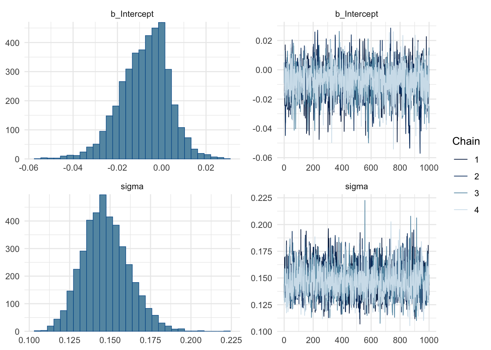
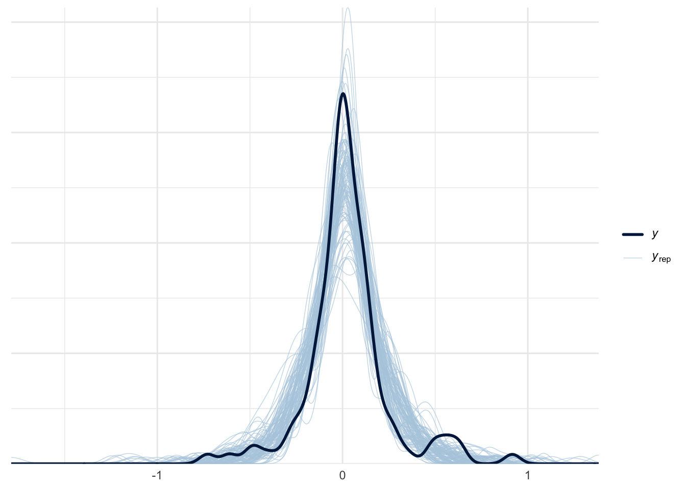
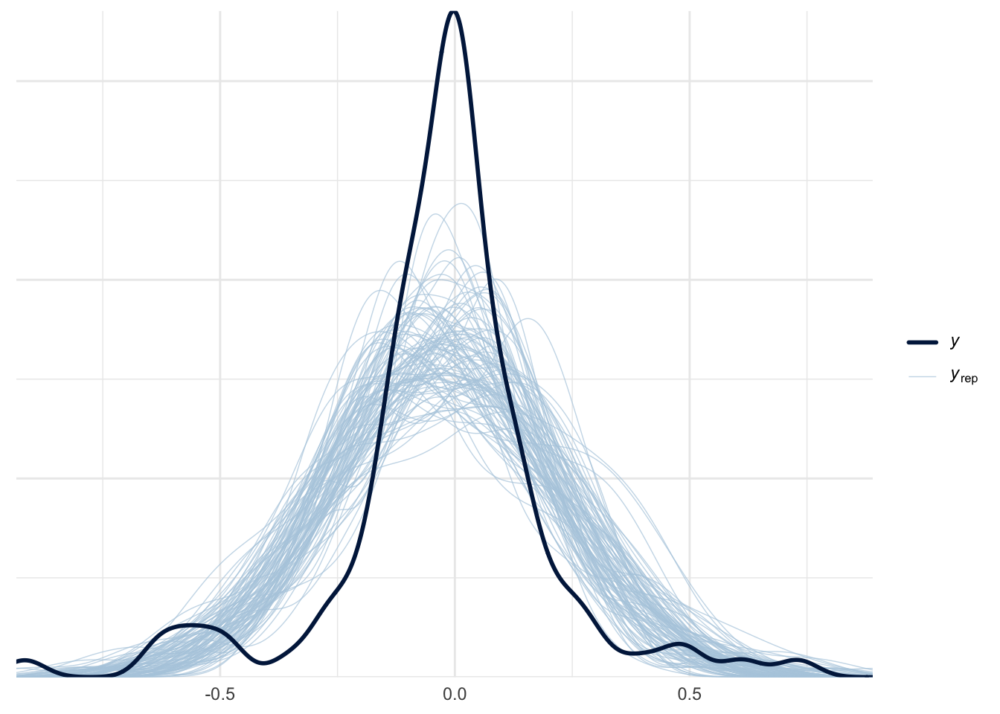
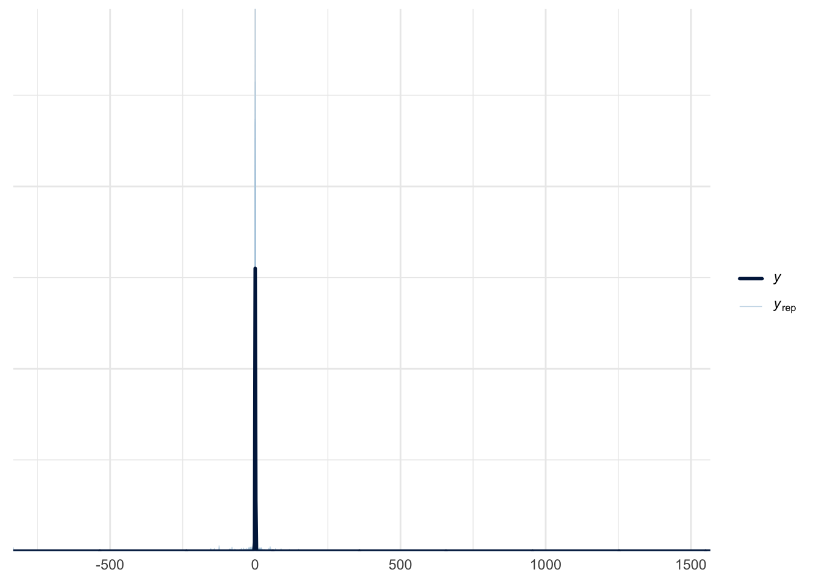

task2_df %>%ggplot(aes(y = va.select.x - va.ans.x, x = param.p, color = param.lambda)) +geom_point() +labs(title ="Signed error on x-axes against flat-top-ness") +scale_color_gradient2(low =brewer.pal(11, "RdYlBu")[1], # Red for negativemid =brewer.pal(11, "RdYlBu")[6], # Yellow for zerohigh =brewer.pal(11, "RdYlBu")[11], # Blue for positivemidpoint =0 )task2_df %>%ggplot(aes(y = va.select.x - va.ans.x, x = flat, color = param.lambda)) +geom_point() +labs(title ="Signed error on x-axes against flat-top-ness") +scale_color_gradient2(low =brewer.pal(11, "RdYlBu")[1], # Red for negativemid =brewer.pal(11, "RdYlBu")[6], # Yellow for zerohigh =brewer.pal(11, "RdYlBu")[11], # Blue for positivemidpoint =0 )
NOTE that error measured on the y-axis is very small, while error measured on the x-axis is larger.
For now we’ll focus on modeling the error on the x-axis; while thinking about how the flatness of the curve influences the error and result? There is however no good way of calculating param.p though, so maynbe this could have been something else? Like the tangent value to the next thing …?
We have at least two choices for the “Some Distribution” — Normal and Laplace.
Task 2 - Vis Angle - Laplace distribution
To fit a laplace distribution, we need to define our own custom distribution, since brms does not provide a default defined Laplace distributino.
Note
There is a wiki about Laplace distribution, which defines the pdf of a Laplace distribution to be \(f(x | \mu, b) = \frac{1}{2b} \exp(-\frac{|x - \mu|}{b})\), where \(\mu\) is a location parameter, and \(b > 0\) is a scale parameter. And this is what the stan manual defines the pdf of the double exponential distribution — \(f(y|\mu, \sigma) = \frac{1}{2\sigma} \exp(- \frac{|y - \mu|}{\sigma})\), basically everything is the same except they’re using different notations for the scale parameter …
# log of the laplace pdf laplace_lpdf <-"real laplace_lpdf(real y, real mu, real sigma) { return -log(2 * sigma) - abs(y - mu) / sigma;}"# define custom family c_family =custom_family("laplace", dpars =c("mu", "sigma"), links =c("identity", "log"), lb =c(NA, 0), type ="real")
# single participant f <-bf(error_va ~1, family = c_family)# define prior p1 <-c(prior(normal(0, 0.5), class ="Intercept", lb=0), prior(cauchy(0, 0.5), class ="sigma", lb =0))p2 <-c(prior(lognormal(0, 0.25), class ="Intercept", lb=0), prior(cauchy(0, 0.5), class ="sigma", lb =0))
Family: laplace
Links: mu = identity; sigma = identity
Formula: error_va ~ 1
Data: . (Number of observations: 110)
Draws: 4 chains, each with iter = 2000; warmup = 1000; thin = 1;
total post-warmup draws = 4000
Regression Coefficients:
Estimate Est.Error l-95% CI u-95% CI Rhat Bulk_ESS Tail_ESS
Intercept 0.01 0.01 0.00 0.03 1.00 1246 884
Further Distributional Parameters:
Estimate Est.Error l-95% CI u-95% CI Rhat Bulk_ESS Tail_ESS
sigma 0.15 0.01 0.12 0.18 1.00 1229 1423
Draws were sampled using sampling(NUTS). For each parameter, Bulk_ESS
and Tail_ESS are effective sample size measures, and Rhat is the potential
scale reduction factor on split chains (at convergence, Rhat = 1).
plot(s.2.va.1)

Given that we are using custom families, we also need to define our custom function to perform posterior predictive checks:
Define custom functions for posterior predictive check:
Code
expose_functions(s.2.va.1, vectorize =TRUE)# Define a random number generator for Laplace distributionlaplace_rng <-function(mu, sigma) {# Generate from Laplace distribution using uniform transformation u <-runif(length(mu)) -0.5 mu + sigma *sign(u) * (-log(1-2*abs(u)))}# Define the posterior predict function for our custom familyposterior_predict_laplace <-function(i, prep, ...) { mu <- brms::get_dpar(prep, "mu", i = i) sigma <- brms::get_dpar(prep, "sigma", i = i)laplace_rng(mu, sigma)}
pp_check(s.2.va.1, ndraws =100)

Task 2 - Vis Angle - Normal distribution
Same math model, except we now have \(\texttt{error_va}_i \sim \mathcal{N}(\mu, \sigma^2)\), instead of a Laplace distribution.
Formula:
f <-bf(error_va ~1,family =gaussian())# define prior p <-c(prior(normal(0, 0.5), class ="Intercept"), prior(normal(0, 1), class ="sigma"))
Family: gaussian
Links: mu = identity; sigma = identity
Formula: error_va ~ 1
Data: . (Number of observations: 110)
Draws: 4 chains, each with iter = 2000; warmup = 1000; thin = 1;
total post-warmup draws = 4000
Regression Coefficients:
Estimate Est.Error l-95% CI u-95% CI Rhat Bulk_ESS Tail_ESS
Intercept 0.02 0.02 -0.02 0.07 1.00 3304 2598
Further Distributional Parameters:
Estimate Est.Error l-95% CI u-95% CI Rhat Bulk_ESS Tail_ESS
sigma 0.23 0.02 0.20 0.26 1.00 3176 2377
Draws were sampled using sampling(NUTS). For each parameter, Bulk_ESS
and Tail_ESS are effective sample size measures, and Rhat is the potential
scale reduction factor on split chains (at convergence, Rhat = 1).
plot(s.2.va.2)
pp_check(s.2.va.2, ndraws =100)

Compared to the fit of the Laplace this one doesn’t look as good …
Task 2 - Vis Angle - Cauchy
Note that a cauchy distribution is a student t distribution with degrees of freedom, nu, fixed to be 1.
f <-bf(error_va ~1,family =student())p <-c(# constant prior for nu to make it cauchy prior(constant(1), class ="nu"))
Family: student
Links: mu = identity; sigma = identity; nu = identity
Formula: error_va ~ 1
Data: . (Number of observations: 110)
Draws: 4 chains, each with iter = 2000; warmup = 1000; thin = 1;
total post-warmup draws = 4000
Regression Coefficients:
Estimate Est.Error l-95% CI u-95% CI Rhat Bulk_ESS Tail_ESS
Intercept 0.01 0.01 -0.01 0.03 1.00 3383 2535
Further Distributional Parameters:
Estimate Est.Error l-95% CI u-95% CI Rhat Bulk_ESS Tail_ESS
sigma 0.08 0.01 0.06 0.10 1.00 3565 2565
nu 1.00 0.00 1.00 1.00 NA NA NA
Draws were sampled using sampling(NUTS). For each parameter, Bulk_ESS
and Tail_ESS are effective sample size measures, and Rhat is the potential
scale reduction factor on split chains (at convergence, Rhat = 1).
plot(s.2.va.3)
pp_check(s.2.va.3, ndraws =100)

LOO comparisons
Recall that the when using a custom brms family, we need to define our own funtions. First define the log_lik (log likelihood) related functions:
expose_functions(s.2.va.1, vectorize =TRUE)# Define log-likelihood function for Laplace distributionlaplace_lpdf <-function(y, mu, sigma) {-log(2* sigma) -abs(y - mu) / sigma}# Define log-likelihood function for brmslog_lik_laplace <-function(i, prep) { mu <- brms::get_dpar(prep, "mu", i = i) sigma <- brms::get_dpar(prep, "sigma", i = i) y <- prep$data$Y[i]laplace_lpdf(y, mu, sigma)}loo(s.2.va.1)
Computed from 4000 by 110 log-likelihood matrix.
Estimate SE
elpd_loo 24.8 12.8
p_loo 1.9 0.3
looic -49.7 25.6
------
MCSE of elpd_loo is 0.0.
MCSE and ESS estimates assume MCMC draws (r_eff in [0.3, 0.4]).
All Pareto k estimates are good (k < 0.7).
See help('pareto-k-diagnostic') for details.
Loo comparison between all visual angle related models:
loo(s.2.va.1, s.2.va.2, s.2.va.3)
Output of model 's.2.va.1':
Computed from 4000 by 110 log-likelihood matrix.
Estimate SE
elpd_loo 24.8 12.8
p_loo 1.9 0.3
looic -49.7 25.6
------
MCSE of elpd_loo is 0.0.
MCSE and ESS estimates assume MCMC draws (r_eff in [0.3, 0.4]).
All Pareto k estimates are good (k < 0.7).
See help('pareto-k-diagnostic') for details.
Output of model 's.2.va.2':
Computed from 4000 by 110 log-likelihood matrix.
Estimate SE
elpd_loo 4.1 12.7
p_loo 3.7 1.3
looic -8.2 25.5
------
MCSE of elpd_loo is 0.0.
MCSE and ESS estimates assume MCMC draws (r_eff in [0.7, 0.8]).
All Pareto k estimates are good (k < 0.7).
See help('pareto-k-diagnostic') for details.
Output of model 's.2.va.3':
Computed from 4000 by 110 log-likelihood matrix.
Estimate SE
elpd_loo 22.6 13.0
p_loo 2.0 0.0
looic -45.2 26.1
------
MCSE of elpd_loo is 0.0.
MCSE and ESS estimates assume MCMC draws (r_eff in [0.8, 0.9]).
All Pareto k estimates are good (k < 0.7).
See help('pareto-k-diagnostic') for details.
Model comparisons:
elpd_diff se_diff
s.2.va.1 0.0 0.0
s.2.va.3 -2.2 3.3
s.2.va.2 -20.7 4.6